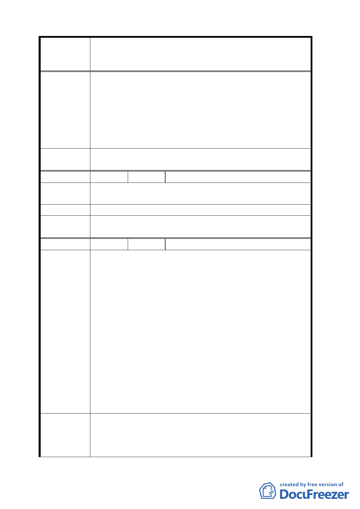

案名
委員會
決議
編號
陳情理由
建議辦法
委員會
決議
編號
陳情理由
建議辦法
變更臺北市華光社區暨週邊地區住宅區、電信用地、郵
政用地及變電所用地土地為商業區、數位科技專用區及
金融服務專用區主要計畫案
業區不是也應該要有變更審議規範？回饋機制？
2.請臺北市政府就數十年之研究報告成果，向委員說明
安置現住戶需要多少面積土地。並將公園用地變更為
住宅區，並註明供安置司法現住戶使用，興建方式參
採眷村改建條例，才符合都市更新最終目標。
3.為讓委員瞭解，請在臺北市都市計畫委員會審查時，
通知准許列席陳述意見。
同編號 2 決議。
25 陳情人 財政部國有財產局臺灣北區辦事處
公展計畫書圖記載缺漏大安區金華段 3 小段 148-2
地號土地。
建議查明後修正。
同編號 16 決議。
26 陳情人 闞連生、費金蘭、廖玉枝
1.本案號稱都市更新旗艦計畫，僅依據行政院 96.7.4.院
會一句「打造金融管理及數位通訊中心、創造無限商
機」，即將該地區從林洋港擔任市長以來數十年即以都
市更新方式開發之本地區委託規劃設計報告書，及花
費無法計數之臺北市政府專業公務人員人力物力全拋
棄，數十年來對司法宿舍居民協調承諾，就少數人主
觀意見就推翻。
2.變更為數位科技專用區，也不過是將現有電信用地變
更為新亮眼名字，對該電信實質發展毫無助益可言，
土地不變更該等公司也仍可繼續營運發展。
3.既然政府要賣土地增加稅收，也可以將一點住宅區土
地賣給司法宿舍人員，達成安置及增加國家稅收目
標，同時獲得百姓肯定政府勤政愛民。
4.該地區公園用地已達法定面積，尤以對側即有數十公
頃中正紀念堂公園。
1.請說明打造金融管理中心及商業區之財務分析報告為
何？達成目標數據為何？創造多少商機演算數據為
何？課題？因應措施？增加商業區、金融管理中心段
環境等各方面的衝擊及因應措施？並未見有具體詳盡
- 17 -